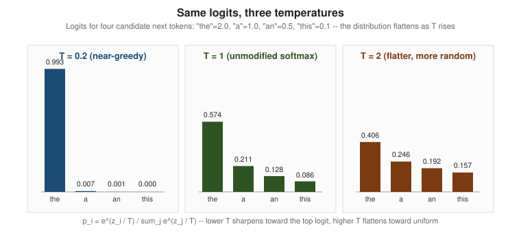

Sampling & Decoding
|
This content was generated with the assistance of AI and should be verified against the official documentation before being relied on in production. |
Examples on this page target Python 3.12 with the current anthropic and openai SDKs and Ollama 0.34, checked
against the vendors' own API references as of 2026-09-28. This page treats decoding as a pipeline: a model’s
forward pass ends in one number per vocabulary entry (a logit), and a decoding strategy turns that vector of
numbers into the single next token that actually gets appended to the output — What
Is an LLM? introduced next-token prediction as the model’s core loop; this page is about the step that follows
it, once the logits already exist.
Logits and softmax with temperature
A logit is an unnormalized score the model assigns to each vocabulary entry for "how likely is this token next". Logits can be any real number (positive, negative, arbitrarily large) and do not sum to anything meaningful on their own, so they are converted into a proper probability distribution with the softmax function:
Here is the logit for vocabulary entry i, and T (temperature) rescales the logits before the exponential. Dividing by a small T (below 1) exaggerates the gap between the largest logit and the rest, so softmax concentrates almost all the probability mass on the single most likely token — decoding becomes closer to always picking the top logit. Dividing by a large T (above 1) shrinks that gap, flattening the distribution toward uniform and giving lower-probability tokens a real chance of being chosen. T = 1 is plain, unmodified softmax: the logits pass through unscaled.

The following demo computes for the same four toy logits at three temperatures with plain numpy,
reproducing the figure above:
import numpy as np
tokens = ["the", "a", "an", "this"]
logits = np.array([2.0, 1.0, 0.5, 0.1])
def softmax_with_temperature(logits: np.ndarray, temperature: float) -> np.ndarray:
scaled = logits / temperature
scaled -= scaled.max() # subtract the max for numerical stability before exponentiating
exp = np.exp(scaled)
return exp / exp.sum()
for temperature in (0.2, 1.0, 2.0):
probs = softmax_with_temperature(logits, temperature)
print(f"T={temperature}:", {t: round(float(p), 4) for t, p in zip(tokens, probs)})
# T=0.2: {'the': 0.9927, 'a': 0.0067, 'an': 0.0005, 'this': 0.0001}
# T=1.0: {'the': 0.5745, 'a': 0.2114, 'an': 0.1282, 'this': 0.0859}
# T=2.0: {'the': 0.4056, 'a': 0.246, 'an': 0.1916, 'this': 0.1569}Subtracting the running maximum before exponentiating is the standard numerically stable softmax
implementation, used because it avoids overflow for large logits and does not change the resulting
distribution; the same trick is what production inference stacks use internally, exposed to callers only
through the temperature request parameter described below.
Decoding strategies: greedy, top-k, top-p
Temperature reshapes the distribution; a decoding strategy decides which tokens from that (reshaped) distribution are even eligible to be picked, and how the actual choice is made:
-
Greedy decoding always picks the single highest-probability token at every step. It is fully deterministic given the same logits, but it can produce repetitive or bland text, and it is not guaranteed to find the overall highest-probability sequence — a locally best token can lead down a path that scores worse overall than a path that started with a slightly less likely token (beam search, which tracks several candidate sequences at once, addresses that specific problem, at the cost of more compute per step).
-
Top-k sampling restricts the candidate pool to the k highest-probability tokens, renormalizes their probabilities to sum to 1, and samples from that restricted pool. A fixed k is a blunt tool: when the model is very confident, the true best candidates might be far fewer than k; when it is uncertain, k candidates might not capture enough of the probability mass.
-
Top-p sampling (nucleus sampling) fixes that by choosing a probability mass instead of a fixed count: it takes the smallest set of highest-probability tokens whose cumulative probability reaches a threshold p (for example 0.9), renormalizes, and samples from that set. The nucleus grows or shrinks automatically with the model’s confidence at each step — a confident distribution needs only one or two tokens to reach p; a flat, uncertain one needs many more. This is the technique Holtzman et al. introduced as an alternative to both greedy decoding and fixed top-k, specifically to fix the repetitive, degenerate text that pure maximization-based decoding tends to produce (see References).
Top-k and top-p are usually applied after temperature scaling, in the same request: temperature reshapes the distribution, then top-k/top-p narrows which of the reshaped distribution’s tokens are eligible, and only then does sampling actually draw one.
Stop sequences and max tokens
Two parameters bound generation independently of what the sampled tokens actually are:
-
Stop sequences (
stop_sequenceson Anthropic,stopon OpenAI,stopinside Ollama’soptions) are literal strings that end generation the moment they appear in the output, without being included in the returned text. They are the mechanism behind constructs like "stop before the model starts a new turn" in a multi-turn format, or "stop at the closing tag" when the prompt asks for a single XML element. -
Max tokens (
max_tokenson Anthropic,max_completion_tokenson OpenAI,num_predictinside Ollama’soptions) caps the number of tokens the model is allowed to generate, independent of whether it would have stopped naturally. A response that hits this cap rather than a natural stop is reported as such (Anthropic’sstop_reasonis"max_tokens"rather than"end_turn"or"stop_sequence"), which is worth checking programmatically rather than assuming every response finished the thought it started.
Logprobs
Logprobs (log probabilities) are the model’s own confidence, returned alongside the generated tokens rather
than only used internally: for each output token, the API can report the log probability the model assigned to
the token it chose, plus (optionally) the log probabilities of the runner-up tokens it did not choose at that
position. Because they are natural-log probabilities, a value of 0 means "the model was completely certain" and
increasingly negative values mean decreasing certainty; exponentiating a logprob (math.exp(logprob)) recovers
the corresponding plain probability. Logprobs are useful for confidence scoring an answer, building custom
re-ranking or filtering logic over a small set of candidate completions, and debugging why a model chose one
token over an expected alternative, without needing a second call to explain itself.
Best-of-N and test-time compute
Best-of-N generates N independent completions for the same prompt (typically at a temperature above 0, so the completions actually differ) and then picks the best one by some scoring method: a reward model, a verifier that checks the answer against a known constraint (does the code compile, does the extracted JSON validate against its schema), or a simple heuristic like majority vote across the N answers (a technique often called self-consistency, covered as a prompting pattern in more detail on Prompting Techniques). Best-of-N is the simplest member of a broader family called test-time compute: instead of relying purely on a bigger or better-trained model, spend more computation at inference time — more sampled completions, more reasoning steps, more verification passes — to trade latency and cost for a better final answer on a given prompt. Reasoning models (Reasoning Models) formalize the same trade-off inside a single generation, using an internal token budget instead of N separate completions.
Determinism, seeds, and why T = 0 is not fully deterministic
Setting temperature to 0 is often described as "deterministic mode", since a temperature of exactly 0 collapses
the softmax in the formula above to always selecting the single highest-logit token — equivalent to greedy
decoding. Ollama additionally exposes a seed parameter, and OpenAI’s Chat Completions API exposes a seed
parameter for its own sampling randomness, so that a given set of logits produces the same sampled token run
to run. Neither of these guarantees a genuinely deterministic response on a hosted, multi-tenant API, for two
independent reasons that have nothing to do with the sampling step itself:
-
Batching effects. A production inference server processes many requests concurrently in batches for throughput, and the exact batch composition (which other requests happen to be running alongside yours) can change how floating-point operations are ordered and even which kernel implementation gets used, which changes the logits themselves slightly before sampling ever happens — so "T = 0, same seed" still is not "same logits every time" on a shared server.
-
Floating-point non-associativity. Floating-point addition and multiplication are not strictly associative (
(a + b) + canda + (b + c)can round to slightly different results), and a GPU’s parallel reduction order for summing across many values is not fixed run to run. Tiny numerical differences this introduces are usually inconsequential, but occasionally they are just large enough to flip which of two very close logits is the largest, which flips the greedily chosen token, which can cascade into a visibly different continuation from that point on.
In practice, "T = 0 plus a fixed seed" is best understood as low-variance, not bit-for-bit reproducible, on a hosted API; a locally run, single-request Ollama model on fixed hardware gets much closer to true reproducibility, because there is no other tenant’s traffic to change the batch.
Recommended settings per task
There is no universally correct temperature; the right setting follows from how much the task rewards a single best answer versus rewards diversity:
| Task | Temperature | top_p | Why |
|---|---|---|---|
Code generation |
0 — 0.2 |
default (1.0) or unset |
Code has one syntactically and semantically correct answer far more often than prose does; low temperature favors the model’s single most confident token at each step, and a stray sampled token can break compilation entirely. |
Structured extraction / classification |
0 |
default (1.0) or unset |
The task is "find the one correct label or value", not "write something plausible"; greedy decoding is both the most accurate and the most reproducible choice, and reproducibility matters for anything checked by an automated test. |
Creative writing / brainstorming |
0.7 — 1.0 (or higher) |
0.9 — 0.95 |
The task rewards variety over a single "correct" continuation; a higher temperature (optionally combined with nucleus sampling to avoid truly incoherent low-probability tokens) produces more varied, less repetitive output across multiple generations. |
These are starting points, not fixed rules — Prompt Engineering Fundamentals and Managing Prompts cover testing a prompt (and its sampling settings) against a golden set rather than trusting a table in isolation.
Which parameters reasoning models restrict
Current reasoning models on both major hosted APIs restrict or remove plain sampling controls, because their answer already comes from an internal search/verification process rather than a single greedy or sampled pass, and exposing raw temperature/top-p control over that process would fight the training that shaped it. As of 2026-09-28:
-
Anthropic. On the current Claude generations — including this section’s baseline model
claude-sonnet-5— settingtemperature,top_portop_kto any non-default value returns an HTTP 400 error on every request, whether or not thinking is used (see Anthropic’s Claude Sonnet 5 overview).claude-sonnet-5also has adaptive thinking on by default. On older models that still accept sampling parameters, such asclaude-haiku-4-5, the restriction applies only while extended thinking is on:temperatureandtop_kcannot be combined with thinking, andtop_pmay only be set between 0.95 and 1. Reasoning depth is instead controlled through the thinking-specific parameters (Reasoning Models coversbudget_tokensandeffortin detail), not through the ordinary sampling parameters. Check the current model’s page under Anthropic’s models overview before sending any sampling parameter. -
OpenAI. Reasoning models (the
o-series and the reasoning-enabledgptmodel lines) do not accepttemperature,top_p,presence_penalty,frequency_penalty,logit_biasornat values other than their fixed defaults, and some of these models also do not support thestopparameter. Reasoning depth is controlled throughreasoning.effortinstead.logprobssupport for these models has also varied by model and effort level, so verify current per-model support on OpenAI’s reasoning models guide before relying on it.
The practical rule that follows from both vendors' current behavior: for a reasoning model, do not send
temperature/top_p/top_k at all and control behavior with the model’s own effort/budget parameter instead — sending them either does nothing, or gets the request rejected, depending on the exact model and API
version.
Examples
Anthropic SDK: temperature and stop_sequences
This example targets claude-haiku-4-5 rather than the baseline claude-sonnet-5, because claude-sonnet-5
rejects any non-default temperature, top_p or top_k with HTTP 400. It sets only temperature, because
claude-haiku-4-5 also returns a 400 error when temperature and top_p are both set.
import anthropic
client = anthropic.Anthropic() # reads ANTHROPIC_API_KEY from the environment
response = client.messages.create(
model="claude-haiku-4-5", # accepts sampling params; claude-sonnet-5 does not
max_tokens=200,
temperature=0.3, # temperature OR top_p on this model, not both
stop_sequences=["</answer>"],
messages=[
{"role": "user", "content": "Summarize what DocsAssistant's retriever does, "
"then write </answer> and stop."}
],
)
print(response.content[0].text)
print(response.stop_reason) # "stop_sequence" once </answer> is reachedSee the Anthropic Messages API reference for temperature
and stop_sequences, and the
Claude Haiku 4.5 migration guide for
its temperature/top_p rule.
OpenAI SDK: logprobs
from openai import OpenAI
client = OpenAI() # reads OPENAI_API_KEY from the environment
response = client.chat.completions.create(
model="gpt-4.1",
messages=[{"role": "user", "content": "What does the pgvector <=> operator compute?"}],
logprobs=True,
top_logprobs=3,
temperature=0,
)
choice = response.choices[0]
print(choice.message.content)
for token_logprob in choice.logprobs.content[:5]:
print(token_logprob.token, token_logprob.logprob)See the OpenAI Chat Completions API reference
for logprobs and top_logprobs.
Ollama /api/chat: temperature, top_k, top_p and seed
curl http://localhost:11434/api/chat -d '{
"model": "llama3.1:8b",
"messages": [
{"role": "user", "content": "What does ef_search control in an HNSW index?"}
],
"stream": false,
"options": {
"temperature": 0.2,
"top_k": 40,
"top_p": 0.9,
"seed": 42
}
}'See the Ollama API documentation for the /api/chat endpoint and its options
object (temperature, top_k, top_p, seed, stop, num_predict).